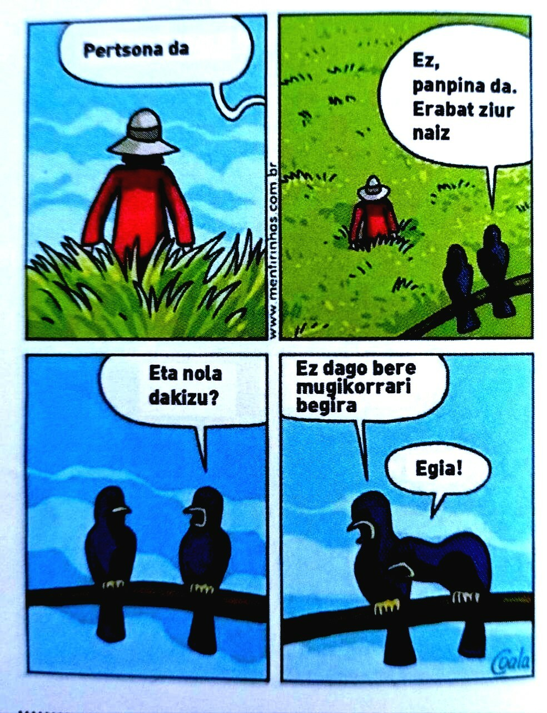

INTERNETA ETA GAILU DIGITALAK

Irudiaren iturria https://mastodon.eus/@txopi/108288726872765038
Unibertso digitalak eskaintzen dizkigun erronketan murgildu aurretik, galdera sinple batekin hasiko gara:
Zuetako zenbatek imajina zenezakete zuen egunerokotasuna telefono mugikor edo Interneta erabili gabe?
Horixe! Ia ezinezkoa dirudi, ezta? Izan ere, teknologia gure bizitzaren zati oso garrantzitsua baita. Lagunekin eta senideekin komunikatzetik hasi eta gure eskola-proiektuetarako informazioa bilatzeraino, Internetak eta gailu digitalek aukera ugari eskaintzen dizkigute.
Baina, edozein tresna boteretsuk bezala, erantzukizun handia ere badakarte. Imajinatu makila magiko bat dutela eskuetan, desio guztiak egia bihur ditzakeena, baina hondamena ere eragin dezakeena, behar bezala erabiltzen ez bada. Gailu digitalak makila magiko hori bezalakoak dira. Ezagutza-, sormen- eta konexio-mundu bat eskaintzen digute, baina desinformazioa, ziberjazarpena eta adikzioa bezalako arriskuetara ere eraman gaitzakete.